序
台北車站沒有第十三號月台。
這件事，沈雨澄比任何人都清楚。她在行車調度室值了六年夜班，閉著眼睛也能畫出整座車站的軌道圖：地面層、地下層、東西正線、側線、留置線，總共哪幾條軌道，哪幾個月台，哪一個號誌燈壞了三年沒人修，她都知道。
所以當那一夜控制盤上亮起一條她從沒見過的綠線時，她的第一個念頭不是害怕，而是：誰在開玩笑。
第一章雨夜
那是九月的一個星期二，颱風外圍環流掃過北台灣，雨從傍晚下到深夜，一點也沒有要停的意思。
凌晨一點四十分，末班車早已收班，調度室裡只剩雨澄一個人。她把濕透的外套掛在椅背上，端著已經冷掉的咖啡，看著控制盤上的燈號一盞一盞暗下去——那是她一天之中最喜歡的時刻，整座車站像一頭疲倦的巨獸，終於躺平了，開始緩慢地呼吸。
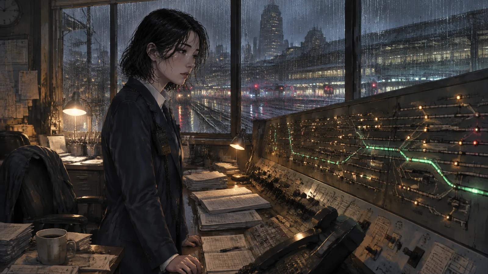
她喜歡夜班。夜班安靜，沒有人會問她週末要不要一起去哪裡，沒有人會用那種小心翼翼的語氣問她「家裡還好嗎」。夜班的台北車站是一座空城，她是唯一的守城人，而她已經習慣一個人守著什麼東西了。
然後，盤面右下角，在她記憶中一直是空白金屬的那個位置，亮起了一條綠線。
她眨了眨眼。
綠線還在。它從地下二層的東正線分岔出去，往一個不存在的方向延伸，末端標示著一個月台的符號。控制盤上沒有編號，可是雨澄數了數：一、二、三……那個位置，如果真的存在，就會是第十三。
她拿起話筒撥給地下層的站務室，響了十二聲，沒人接。她又撥給保全，保全說地下二層一切正常，什麼都沒有。
「你確定？」
「沈姐，我人就站在東正線月台上，我對天發誓，這裡除了雨聲什麼都沒有。」
雨澄掛上電話，盯著那條綠線看了很久。她拿起維修登記簿，翻到最後一頁，準備寫「控制盤右下角燈號異常」，筆尖停在紙上，卻遲遲沒有落下去。
她想起父親說過的一句話。那時候她才十歲，父親還是台鐵的司機員，跑晚班回家總是一身柴油味，坐在餐桌邊吃她和母親留給他的冷菜。有一次他吃到一半忽然說：「鐵路上有些東西，是時刻表上找不到的。」
她當時以為他在講鬼故事，還興奮地追問了半天。父親只是笑，什麼也沒有多說。
凌晨兩點整，廣播系統忽然自己啟動了。
喇叭裡先傳來一陣沙沙的雜訊，像老唱片走到了盡頭。然後是一個女聲，語調平板得像三十年前的錄音帶：
「開往——的列車，即將進站。請要搭乘的旅客，前往第十三號月台。」
目的地那個位置是一段空白，像被人用剪刀整齊地剪掉了。
雨澄放下咖啡杯。她發現自己的手在抖，不是因為害怕，而是因為某種更久遠的東西——那種小時候在夜裡聽見火車汽笛聲，會忍不住從床上爬起來、跑到陽台去等的心情。等什麼呢？等父親開的那班車經過。他們家住在鐵道旁邊，父親每次經過都會鳴兩聲短笛，那是他們之間的暗號。
她已經二十二年沒有聽到那個暗號了。
她穿上濕外套，拿起手電筒，關掉調度室的燈，走了出去。
第二章老周
通往地下二層的員工樓梯又窄又陡，牆上的磁磚有一半已經掉了，露出底下灰色的水泥。雨澄走過這條樓梯無數次，從沒注意過樓梯間的盡頭有一條岔路。
但今晚有。
那是一條更窄的通道，天花板低得她必須微微低頭，日光燈管一閃一閃的，牆上滲著水，一滴一滴落在積水裡，發出很小的聲音。通道的盡頭有一道鐵門，漆成很多年前台鐵慣用的那種綠色，門縫裡透出昏黃的光和一縷一縷的白霧。
門邊站著一個人。
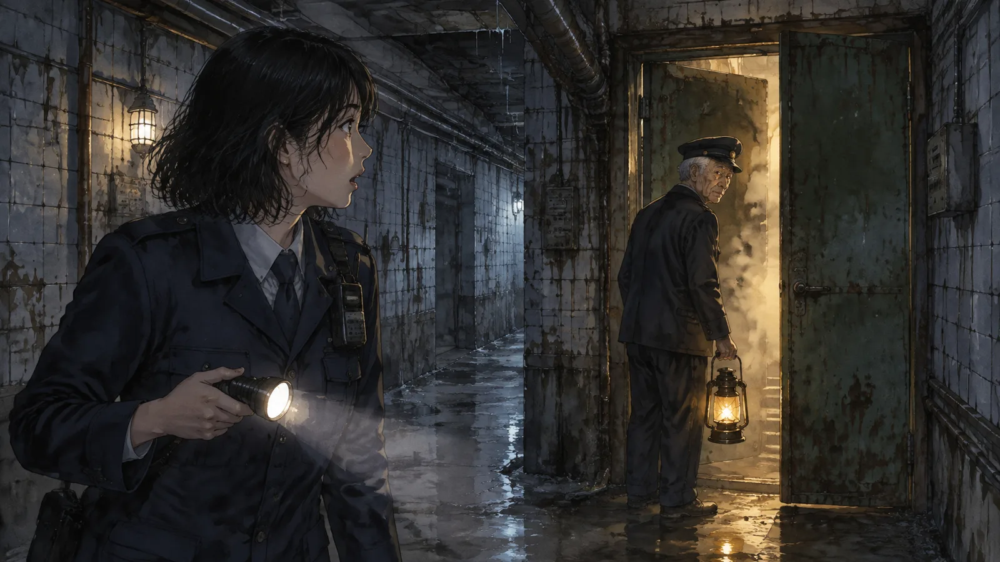
老人穿著雨澄只在老照片上見過的舊制服，深藍色的，肩章早就褪成了灰白色。他戴著大盤帽，手裡提著一盞黃銅提燈——提燈裡真的有火，一小簇，在霧裡輕輕地晃。
「沈雨澄。」老人說。不是問句。「調度室的。」
「你是誰？」
「老周。」他說，「我在這裡守門，守了很久了。」
雨澄握緊手電筒，把光打在他臉上。老人沒有躲，只是瞇起眼睛，臉上的皺紋密密麻麻擠在一起，像一張揉過又攤開的紙。
「這扇門後面是什麼？」
「妳控制盤上看到的那個月台。」老周說，「每一次有人第一次值夜班看到那條綠線，都會下來看看。大部分人走到樓梯口就回頭了，有幾個走到通道一半，聽到水滴的聲音就跑了。妳走到了門邊，很少見。」
「這不合理。車站的圖面我看過幾百次，這裡沒有——」
「圖面上沒有的東西多的是。」老周把提燈舉高了一點，火光落在雨澄臉上，暖暖的，「這個月台不在任何一張圖上。它只在下雨的夜裡出現，而且，只有心裡還有信沒寄出去的人，才找得到路。」
「信？」
「每個人心裡都有一封信。」老周說，「寫給某個人的。寫好了，卻一直沒有寄。有的是不敢寄，有的是不知道該寄去哪裡，有的是收信的人已經不在了。這班車，就是開去把信送到的。」
雨澄想說她沒有那種信。她三十二歲，一個人住在中和一間十坪的套房裡，父親二十二年前失蹤，母親五年前過世，她的人生早就整理得乾乾淨淨，像一張收班後的控制盤，沒有什麼多餘的燈還亮著。
但她沒有把這些話說出口。因為她發現，老周的目光落在她制服外套的內側口袋上——那裡放著一張紙。她隨身帶了二十二年，摺了又摺，紙邊都已經起毛，摺痕處薄得快要透光。
「妳帶著呢。」老周溫和地說。
那是她十歲那年寫的。寫給父親的。
「車還有幾分鐘進站。」老周側過身，鐵門在他身後緩緩打開，霧湧了出來，帶著鐵鏽、舊木頭和柴油的味道，「妳可以進去，也可以回去睡覺。我不勸人，勸也沒有用。」
雨澄站在門口。她想起母親臨終前握著她的手說的話：「不要像妳爸，什麼都放在心裡。」她當時點頭，但她知道自己早就變成了那樣的人。
她深吸一口氣，走了進去。
第三章月台
那是一座她從沒見過、卻莫名熟悉的月台。
沒有電子看板，沒有黃色的警示線，沒有播放廣告的液晶螢幕，只有水泥地面、木頭長椅、一排圓形的老式月台燈，燈罩裡的鎢絲燈泡發出橘黃色的光。頂棚是鐵皮的，雨打在上面，聲音像有人在遠處持續不斷地鼓掌。
月台的盡頭立著一個紅色的郵筒。圓柱形的，老式的，投信口上方有一片小小的雨遮，漆已經斑駁，但很乾淨，像有人每天都來擦拭。
雨澄沿著月台往前走。腳步聲在空曠中回響，她忽然意識到一件事：這裡沒有時鐘。整個台北車站，每一個月台、每一條通道、每一間辦公室，都有時鐘。這是鐵路的規矩，時間是鐵路的骨頭。唯獨這裡沒有。
遠處傳來汽笛聲。
那不是現代電聯車的電子鳴笛，而是一種更低沉、更長的聲音，像從胸腔深處發出的嘆息。雨澄的心跳漏了一拍——她認得這個聲音。小時候父親開的那班車，就是這個聲音。
列車從霧裡浮現。
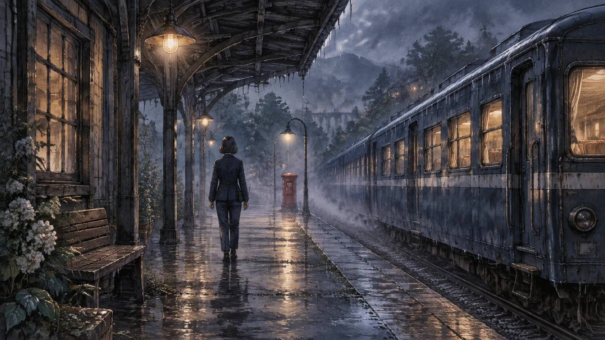
深藍色的車身，白色的腰帶，車窗是可以向上推開的老式木框窗。是普快車，藍皮的，父親開了十五年的那種。這種車早在雨澄大學畢業前就全部退役了，她以為只能在鐵道博物館裡看到，隔著一條紅絨繩，旁邊放著一塊「請勿觸摸」的牌子。
列車緩緩停下。車門沒有自動打開，得用手拉。雨澄站在車門前，手放在冰冷的鐵把手上，忽然想起了很多年前的一個晚上。
那是一九九九年八月，她十歲。父親輪晚班，照例在出門前把便當盒放進帆布袋，摸摸她的頭，說「早點睡」。她那天在生氣，因為父親答應暑假要帶她去看海，卻又臨時被叫去加班。所以她沒有回話，也沒有抬頭，只是死死盯著電視上的卡通。
她記得卡通的內容。她一輩子都記得那集卡通的內容，卻不記得父親那天穿的是哪一件外套。
那是她最後一次看見他。
第二天早上，父親沒有回來。台鐵說他的班次正常抵達終點站八堵，車也正常入庫，但沒有人看見他下車。監視器壞了。同事說他最後一次出現，是在八堵站的月台上，一個人站著，看著鐵軌。然後就沒有然後了。
警察查了三個月，結論是「自行離去」。母親從此不再提起他，把他的照片收進衣櫃最上層的鐵盒裡。雨澄在心裡替父親編了一百種理由，每一種都試圖說服自己：他不是不要我們。
十歲的她寫了一封信，想寄給他，卻不知道地址。那封信就這樣在她口袋裡放了二十二年，換過六件外套，從沒有離開過她。
雨澄拉開車門，走了上去。
第四章乘客
車廂裡是暖的。
不是空調的那種暖，而是一種更古老的暖，像冬天的教室，像老家的廚房。木質座椅，黃銅扶手，車廂燈是一顆一顆裸露的燈泡，光線昏黃，把每個人的影子都拉得很長。
車廂裡大約有二十個人。他們各自坐著，沒有人說話，沒有人看手機——事實上沒有人拿著手機。每一個人的手裡都捧著一個信封。有的是泛黃的牛皮紙，有的是印著花邊的粉紅信紙，有的只是一張摺起來的作業簿內頁。
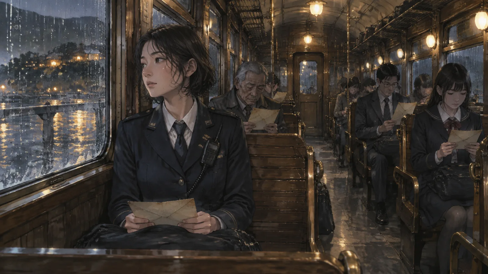
雨澄找了一個靠窗的位子坐下。斜對面是一個穿著制服的高中女生，短髮，制服的樣式是七、八〇年代的，百褶裙，白襪。她把信封放在膝蓋上，兩隻手交疊壓著，好像怕它飛走。
她身後是一個西裝筆挺的中年男人，領帶打得很整齊，襯衫燙得沒有一絲皺摺，眼睛卻紅腫得像哭了整晚。再後面是一個老太太，信封放在竹籃裡，籃子裡還有一個保溫瓶和一包用報紙包著的東西，看形狀像是粽子。
沒有人問彼此要去哪裡。雨澄忽然明白：這裡的每一個人，都是要去見某個人的。而那個人，大概都是已經見不到的人。
列車開動了。
窗外先是隧道的黑，然後慢慢亮起來。雨澄把臉貼近玻璃，看見窗外的景色詭異地一分為二——左半邊是她認得的台北，玻璃帷幕大樓、LED廣告牆、便利商店的招牌；右半邊卻是她只在照片裡見過的台北，紅磚矮房，鐵皮屋頂，雜貨店門口掛著鐵牌的菸酒招牌，還有一輛停在路邊、車頭圓圓的黃色老計程車。
兩個時代在雨中交融，像兩張照片疊在一起，誰也不肯讓誰。
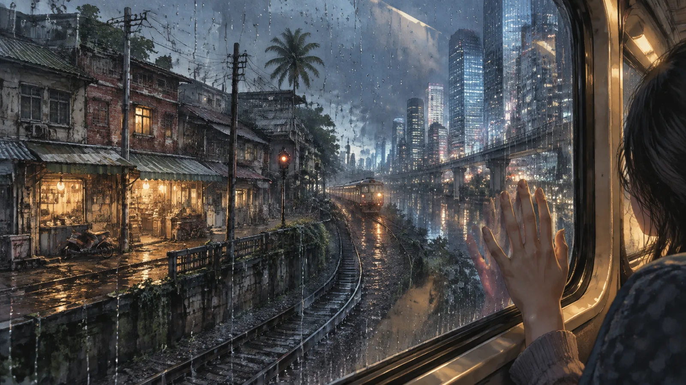
雨澄看見一個女人站在舊台北的騎樓下，抱著一個小孩，正抬頭望著列車。她們的臉在雨裡模糊了，可是雨澄有一種很奇怪的感覺，覺得那個小孩正在看她。
列車長來了。
他很高，很瘦，穿著和老周一樣的舊制服，帽簷壓得很低，臉完全藏在陰影裡。他手裡拿著一把黃銅剪票鉗，走到每個人面前，彎下腰，不說話，只是伸出手。
高中女生從信封裡抽出一張車票，遞給他。列車長剪了一下，票根上出現一個小小的缺口，然後他繼續往下走。西裝男人也遞出車票，手在發抖，車票差點掉在地上。老太太的車票是從保溫瓶底下拿出來的，皺皺的，列車長接過去的時候特別小心，像在接一片葉子。
輪到雨澄。
她沒有車票。她想開口解釋，列車長卻只是靜靜地等著，手掌向上。雨澄下意識地摸了摸制服的內側口袋——那封放了二十二年的信旁邊，多了一張硬紙票。她不知道它是什麼時候出現的。
她把票拿出來。泛黃的硬紙，邊角磨圓了，票面上沒有任何文字，只有一層淡淡的、像是從紙裡透出來的光。
列車長接過票，剪了一下。
然後他做了一件對其他乘客都沒有做過的事——他微微抬起頭，帽簷下露出半張臉。雨澄看見了一雙很老、很溫和的眼睛，眼白已經有些泛黃，可是很亮。
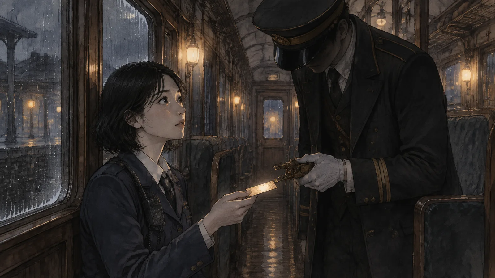
「八堵。」他說，聲音沙啞，「一九九九年八月十七日，晚上十一點二十分。」
他把票還給她。票面上浮現出一行褪色的字，正是他剛剛說的那個時間和地點。
雨澄握著票，指尖冰涼。她記得這個日期。她這輩子不可能忘記這個日期。
第五章八堵
列車停下的時候，雨澄的手心全是汗。
窗外是八堵車站。不是她上個月出差經過的那個八堵——那個有電梯、有電子票閘、有便利商店和自動販賣機的八堵——而是一個更小、更舊、更安靜的八堵。木造的候車室，圓形的月台燈，站名牌是搪瓷的，白底黑字，邊角的漆剝落了，露出底下的鐵鏽。
山邊的雨霧漫過鐵軌，把遠處的號誌燈暈成一團一團模糊的紅。
雨澄拉開車門走了下去。腳一踩上月台，她就聽見遠處傳來熟悉的聲音——柴油引擎的低鳴，一列剛剛入庫的普快車，在夜色裡漸漸熄了火，像一隻大狗慢慢趴下。
然後她看見了他。
父親站在月台的另一端，離她大約五十公尺。深藍色的司機員制服，帽子拿在手裡，頭髮被汗水和雨水黏在額頭上。他手裡提著那個銀色的鐵製便當盒——雨澄記得那個便當盒，蓋子上有一道刮痕，是她八歲時不小心從桌上摔下去留下的。她那時候哭了，父親說沒關係，這樣才認得出來是我們家的。
他一個人站著，看著鐵軌。
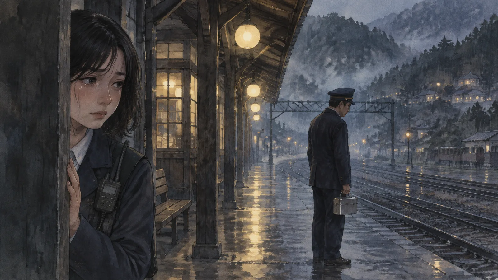
雨澄躲到一根柱子後面。她不知道自己為什麼要躲，也許是害怕他看見自己，也許是害怕他看不見自己。她的眼眶熱得發燙。二十二年來她想像過無數次這個畫面——父親失蹤那晚的最後一刻——想像他是被人帶走的，是出了意外，是失去了記憶，是在暗中執行什麼不能說的任務。
她從來沒有想像過他只是這樣站著。安靜地，像在等一班車。
一個聲音在她身後響起：「他看不見妳的。」
雨澄猛地回頭。老周站在那裡，提燈的火在霧中輕輕搖晃。
「你怎麼會——」
「我守的是門，不是月台。」老周說，「妳要去哪裡，門就在哪裡。」
「他為什麼站在那裡？」雨澄的聲音發顫，「他在等什麼？」
老周沒有立刻回答。他看著遠處的父親，神情裡有一種雨澄看不懂的東西——像是憐憫，又像是熟悉，像是他已經看過這個畫面很多很多次。
「他在等這班車。」老周終於說。
「這班車？」雨澄指著身後那列藍皮列車，「十三號月台的車？」
「妳以為只有台北車站有第十三號月台嗎？」老周輕聲說，「每一個車站，只要是下雨的夜裡，只要有人心裡有信沒寄出去，都會有一個。八堵有，瑞芳有，基隆也有。它不是一個地方，它是一種……等待。」
雨澄轉過頭。
遠處，父親抬起了頭。她順著他的視線望去——霧裡，一列列車的頭燈正緩緩亮起。不是她剛剛搭的那一列，而是另一列，更舊，更暗，車身的藍幾乎已經褪成了黑色，車窗裡的光也是灰的，像很久沒有換過燈泡。
父親深吸了一口氣，把帽子戴回頭上，提著便當盒，一步一步走向那班車。
第六章信
「等一下——」
雨澄衝出柱子，往父親跑去。老周在後面喊了什麼，她沒有聽清楚。她跑過潮濕的月台，跑過那盞一閃一閃的燈，跑過候車室門口那張沒有人坐的長椅，跑到那列黑藍色的列車前面——
父親已經踏上了車門的踏板。
他回過頭來。
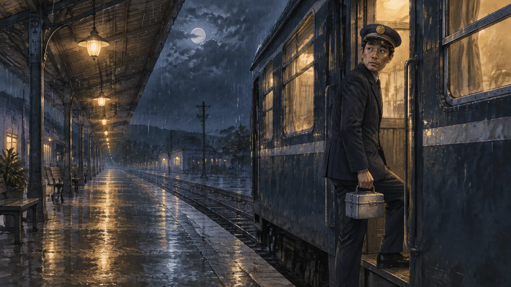
車廂內的暖黃燈光打在他的側臉上。雨澄看見了她十歲那年沒有抬頭看的那張臉：疲倦的、溫柔的、下巴有沒刮乾淨的鬍渣，眼角有兩道很淺的紋路。他的眼睛沒有看她，而是望向月台的另一端，望向雨澄剛剛躲藏的那根柱子，望向更遠的、看不見的地方。
「阿爸。」雨澄說。
他沒有聽見。
「阿爸！」
列車的門在他身後緩緩關上。引擎的低鳴響起，車身微微一震，開始滑動。雨澄追著車跑，跑到月台盡頭，跑到再也沒有路的地方。列車鑽進霧裡，尾燈變成兩個紅色的小點，然後消失了。
她跪在月台的邊緣，喘著氣。雨水從頂棚的縫隙滴在她的後頸上，冰涼的。
老周的腳步聲慢慢靠近。
「他去哪裡了？」雨澄沒有回頭。
「去找他的父親。」
雨澄轉過頭。
老周在她身邊蹲下，把提燈放在地上，火光照亮了他滿是皺紋的臉。「妳的阿公，」他說，「是一九七四年失蹤的。也是台鐵的人，也是在月台上，一個人站著，然後就不見了。妳父親當時十五歲。」
雨澄從來沒有聽過這件事。父親從沒說過，母親也從沒說過。她只知道阿公「很早就過世了」，家裡沒有他的照片，過年拜拜的時候，牌位上有他的名字，可是沒有人講過他的故事。
「妳父親開了十五年的車，每一個下雨的夜裡都在找那個月台。」老周說，「他找到的那一晚，就是一九九九年八月十七日。他上了車，去找他的父親。」
「那他找到了嗎？」
老周沉默了很久。提燈的火苗晃了一下，又穩住了。
「這班車，」他終於說，「是開去送信的。可是妳父親上車的時候，手裡沒有信。」
雨澄愣住了。
「他太急了。他等了二十五年，看到車來的那一刻，什麼都沒有想就上去了。可是沒有信的人，這班車不會為他停靠。」老周看著霧裡列車消失的方向，「他在車上，一直在車上。從一九九九年到現在。列車一站一站地開，每個下雨的夜晚都在找他的父親，可是永遠到不了。」
雨澄覺得自己的胸口像被什麼東西狠狠捶了一下。
「那我阿公呢？」
「也在某一班車上。」老周說，「也沒有信。」
雨澄低下頭，看著自己的手。她想起自己剛剛在車廂裡看到的那些乘客，每個人手裡的信封，每一封都寫好了，封好了，貼了郵票。她想起自己口袋裡那張摺了二十二年的紙。
「所以這班車，」她慢慢地說，「是給有信的人搭的。沒有信的人，只能一直坐下去。」
「不是的。」老周搖搖頭，「信不一定要自己寫。」
他站起來，拍了拍膝蓋上的灰，提起提燈。「回程的車快到了。妳還有一點時間。」
第七章回程
回程的列車在凌晨三點進站。
雨澄上了車。車廂裡的人比來的時候少了，高中女生不見了，老太太也不見了，竹籃留在座位上，裡面的保溫瓶還在，粽子不見了。那個西裝男人還在，眼睛不再紅腫，手裡的信封空了，他看起來像剛剛睡了一場很長很長的覺，領帶也鬆開了。
雨澄走到車廂的最後一排，在一個空位坐下。她把那封摺了二十二年的信拿出來，一層一層攤開，平放在膝蓋上。
那是作業簿撕下來的一頁，鉛筆字，很多字寫錯了又用橡皮擦擦掉，紙都擦薄了。十歲的她寫：
「阿爸：你去哪裡了？我不生氣了。你答應要帶我去看海，我可以等。媽媽說你不會回來了，但是我不相信。如果你看到這封信，請你回來。如果你不能回來，請你告訴我為什麼。我會好好的。雨澄。」
她盯著這幾行字看了很久。「我會好好的」那五個字寫得特別用力，鉛筆幾乎要戳破紙。十歲的她大概以為，只要寫得夠用力，就會變成真的。
她把紙翻過來，從口袋裡拿出原子筆——調度室的原子筆，筆桿上還印著台鐵的標誌——在背面寫了幾個字。
寫到一半，她停下來。
她發現自己要寫的，其實不是給父親的信。
她要寫的，是父親沒有寫出來的那一封。給阿公的。一個十五歲的少年，在月台上看著父親消失，二十五年來每個雨夜都在找他，卻從來沒有人告訴他：你可以生氣，你也可以原諒，你可以把這些寫下來，然後放下。
她想像那個十五歲的少年。她想像他長大、考進鐵路局、學會開車、結婚、生了一個女兒。她想像他每次跑夜班經過家門口，都鳴兩聲短笛，因為他知道有人在陽台上等。她想像他在某個雨夜裡，在一盒沒有吃完的便當旁邊，忽然決定要去找他的父親——而那個決定，讓他變成了另一個消失在月台上的人。
她開始寫。
她不知道阿公的名字，就寫「阿公」。她不知道他長什麼樣子，就用父親的臉去想。她寫：我知道你也在找人。我知道你也在等。我們家的人都一樣，都不會說話，都只會站在月台上等一班不會來的車。
她寫：可是我來了。我是你的孫女。我代替阿爸告訴你——他不生氣了。他從來沒有生過你的氣。他只是想你，想到開了十五年的車。
她寫：如果你看到這封信，請你下車。如果阿爸看到這封信，請他也下車。這班車已經開得夠久了。我在台北等你們。我會好好的。這次是真的。
她寫完的時候，天還沒有亮，車廂燈忽明忽暗。她抬起頭。
對面的座位上，坐著一個人。
他看起來只比記憶中老了一點點。頭髮有幾根白的，眼角的紋路深了一些，深藍色的司機員制服皺得像睡了很久。他的手放在膝蓋上，膝蓋上放著那個銀色的便當盒，蓋子上有一道刮痕。
他看著她。這一次，他看見她了。
「雨澄？」他說。
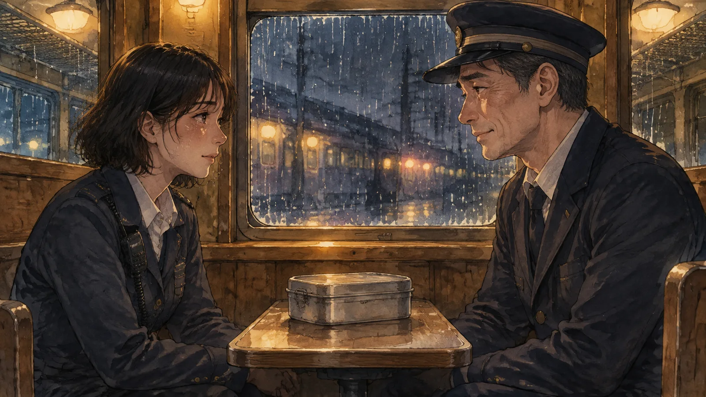
第八章投遞
他們在車廂裡坐了很久。
沒有人說很多話。父親問她幾歲了，她說三十二。父親說，那妳媽媽——她說五年前走了，很安詳，走之前還在念叨家裡的瓦斯費沒繳。父親低下頭，過了很久才抬起來，眼睛紅紅的，說：「對不起。」
雨澄搖搖頭。她不是來聽這三個字的。
「你為什麼不寫信？」她問。
父親看著窗外。窗外的雨光流動著，把他的臉照得一明一暗。「我寫過。」他說，「寫了很多次。可是每次寫到一半，就覺得他不會看，就撕掉了。後來我想，見到面再說吧。見到面，什麼都不用寫了。」
「然後你就上車了。」
「然後我就上車了。」父親苦笑，「車上沒有紙，也沒有筆。我坐在這裡，看著窗外，一站一站地過，每次以為快到了，車就又開走了。我不知道過了多久。有時候覺得只是一個晚上，有時候覺得已經一百年了。」
雨澄把膝蓋上的紙推過去。父親低頭看了很久，看到背面的時候，肩膀開始輕輕地抖。
「這是妳寫的？」
「前面是十歲的我寫的。」雨澄說，「後面是現在的我，替你寫的。」
父親沒有說話。他只是把紙拿起來，摺好，很小心地，像在摺一件很薄很薄的衣服，然後放進自己制服的胸前口袋。
「你去看海了嗎？」雨澄問。
父親愣了一下，然後笑了。那個笑容像從很深的水底浮上來一樣，慢，但是很清楚。「沒有，」他說，「這班車不停海邊。」
「那等一下一起去。」雨澄說，「八堵再過去兩站就是海了。」
列車進站的時候，雨已經變小了。
十三號月台還是那個樣子，鐵皮的頂棚，圓形的燈，盡頭的紅色郵筒。老周提著燈站在月台上，看見他們兩個一起走下來，他臉上的皺紋又擠在一起——這一次雨澄看懂了，那是鬆了一口氣的表情。
父親把信從胸前口袋拿出來，遞給雨澄。「妳寄。」他說，「妳寫的。」
老周給了她一個信封。牛皮紙，很舊，但沒有寫任何字，也沒有貼郵票。雨澄把信裝進去。
「不用寫地址嗎？」她問。
「這裡的郵筒不用地址。」老周說，「信自己會知道要去哪裡。」
雨澄走到月台盡頭。郵筒的投信口很小，紅色的漆在燈光下微微反光。她把信舉起來，停了一秒。
她想起十歲的自己，趴在陽台欄杆上等汽笛聲。她想起二十二年來每一個抬起頭想說話卻沒有說的瞬間。她想起父親站在月台上看著鐵軌的背影，和阿公——那個她從沒見過的人——大概也是同樣的背影。她想起母親說「不要像妳爸」。
她把信投了進去。
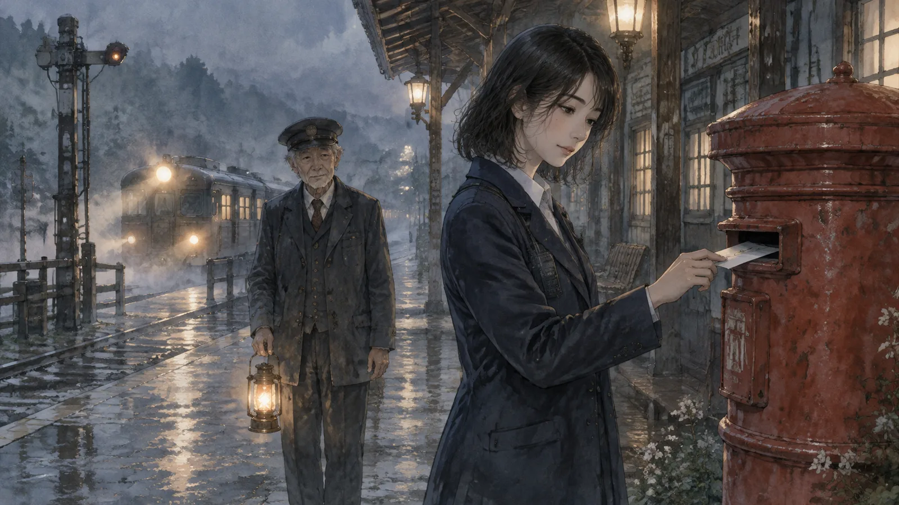
沒有聲音。信落進去的那一刻，霧裡遠遠地響起一聲汽笛，很長，很低，像一聲終於吐出來的嘆息。然後是第二聲，短的。再一聲，也是短的。
兩聲短笛。
父親站在她身後，忽然說：「聽到了嗎？」
「什麼？」
「有一班車停了。」他說，聲音有些發抖，「很遠的地方，有一班車，終於停了。」
尾聲清晨
雨澄是在員工休息室的長椅上醒來的。
窗外的天已經亮了，雨停了，一縷陽光斜斜地照在她的臉上。牆上的時鐘指著六點十分。她的制服外套還是濕的，手裡握著一張泛黃的硬紙車票，票面上的字已經褪得看不清楚，只剩下一個小小的剪票缺口。
她走下樓梯，走到地下二層。樓梯間的盡頭沒有岔路。她用手摸了摸那面牆——水泥的，冰涼的，斑駁的，摸不出任何門的痕跡。只有靠近地面的地方，有一小片磚頭的顏色和其他的不太一樣，像很多年前曾經有過一道門，後來被封起來了。
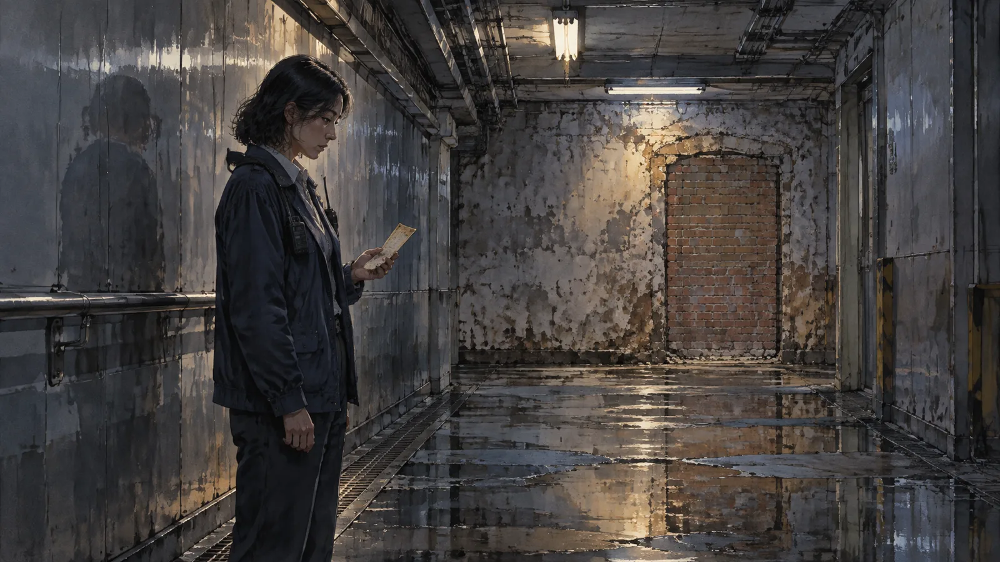
她回到調度室。控制盤上的燈號一切正常。右下角那個位置是空白的金屬，什麼也沒有。維修登記簿攤在桌上，最後一頁空白，筆放在旁邊。
早班的同事進來，看到她還在，嚇了一跳：「沈姐妳沒回家喔？」
「在休息室睡了一下。」
「昨晚颱風雨那麼大，有什麼狀況嗎？」
雨澄想了想。「沒有，」她說，「一切正常。」
她去置物櫃拿東西的時候，發現櫃門是虛掩的。她明明記得昨晚鎖好了。
櫃子裡放著一封信。牛皮紙信封，很舊，蓋著一枚模糊的圓形郵戳，日期是一九九九年八月十七日。信封旁邊，是一個銀色的鐵製便當盒，蓋子上有一道刮痕。
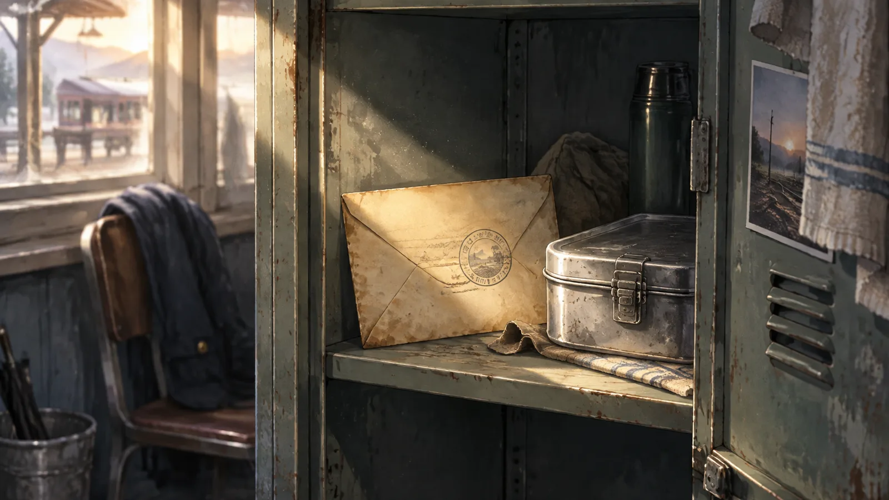
她打開信封。裡面是一張作業簿撕下來的紙，鉛筆字，很多字寫錯了又擦掉。背面是原子筆寫的幾行字，可是筆跡不是她的。那是一種她見過、又幾乎已經忘記的、微微向右傾斜的字：
「雨澄：我下車了。阿公也下車了。我們去看海了。海很大，比我想的還大。妳說的沒錯，可以等。謝謝妳替我把信寄出去。下次換我等妳。——阿爸」
雨澄把信摺好，放回信封，放進外套的內側口袋裡。那個位置空了二十二年，現在剛好放得下。
她打開便當盒。裡面有一顆滷蛋，兩塊排骨，一小撮酸菜，白飯壓得很實。還是溫的。
她坐在置物櫃前的長椅上，慢慢地把它吃完。
窗外，早班的第一列車鳴笛進站了。那是現代電聯車的電子鳴笛，短而清脆，一點也不像嘆息。
雨澄聽著，忽然覺得這樣也很好。
（完）
留言板
看不懂、想補充、發現錯誤都歡迎留言；填個暱稱就能發。